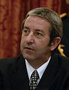
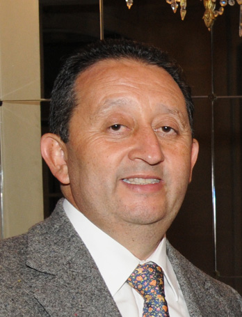
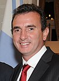
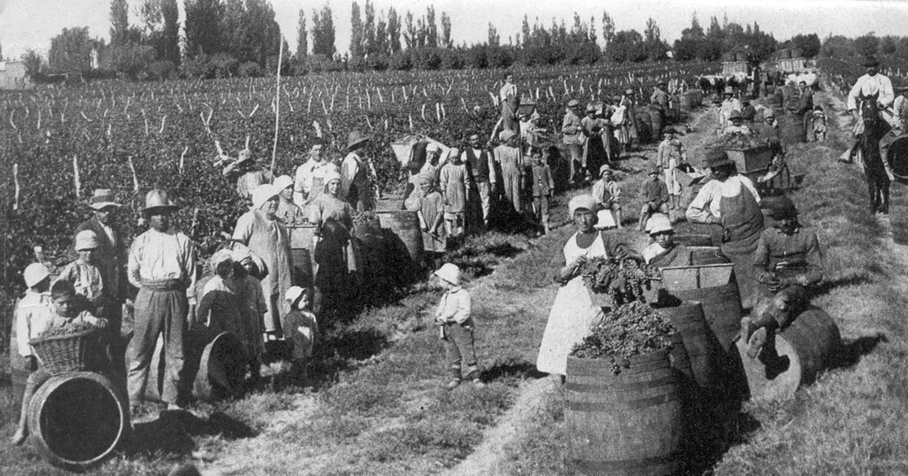

📜 Historia 📜
Fundada en 1561 por Pedro del Castillo, la ciudad lleva el nombre del entonces Gobernador de Chile, García Hurtado de Mendoza. En sus orígenes la base de la economía mendocina reposó en una rudimentaria vitivinicultura – cuyo excedente productivo se enviaba en toneles a lomo de mula a Tucumán y a Buenos Aires –, y en las minas de plata de Uspallata.
En 1776, Mendoza (un pueblo de 8000 habitantes) dejó de depender de Santiago de Chile y pasó a la jurisdicción de Córdoba. En el período de las luchas por la Independencia, Mendoza jugó un rol central y estratégico, gobernada por el entonces Coronel San Martín, quien estableció en El Plumerillo, apenas fuera de la aldea, la base donde organizó al Ejército de los Andes. Tras la Independencia, se constituyó como provincia en 1820. En 1861 un terrible sismo destruyó la ciudad y en 1863 fue reedificada siguiendo los principios del urbanismo europeo.
En 1870 se estableció el telégrafo entre Mendoza y Santiago, y en 1885 llegó el primer convoy de tren desde Buenos Aires, y con ellos llegó la modernidad. Por ese entonces comenzaron a afincarse en Mendoza inmigrantes italianos y españoles que conformarían la casta de vitivinicultores y olivicultores que engrandecerían a la tierra. A la vitivinicultura moderna se sumó la explotación petrolífera, otro pilar de la economía mendocina.
💰Gobierno💰
| Gobernador | Periodo | Partido politico |
|---|---|---|
| 
Julio Cobos |
2003-2007 | UCR |
| 
Celso Jaque |
2007-2011 | PJ |
| 
Francisco Perez |
2011-2015 | PJ |

Alfredo Cornejo |
2015-2019 | UCR |

Rodolfo Suarez |
2019-Actualidad | UCR |
La provincia de Mendoza es, al igual que las demás provincias argentinas, autónoma respecto del gobierno nacional en la mayoría de los temas, exceptuando aquellos de alcance federal.
Poder ejecutivo:
El poder ejecutivo es unipersonal y recae en un ciudadano elegido directamente por la población de la provincia para el cargo de gobernador.22 Es el encargado de ejecutar las leyes y administrar el presupuesto provincial, con la colaboración de su gabinete de ministros.
La Constitución de la Provincia establece un período de gobierno de cuatro años.
Poder legislativo:
El poder legislativo es bicameral, contando con una Cámara de Senadores, integrada por 38 miembros y presidida por el Vicegobernador de la Provincia y otra de Diputados, integrada por 48 representantes. Ambas cámaras funcionan en el edificio de la Legislatura Provincial situada en la Ciudad de Mendoza, en Peatonal Sarmiento y calle Patricias Mendocinas, y se encargan de sancionar las leyes provinciales.
Poder judicial:
El poder judicial es ejercido por una Suprema Corte, cámaras de apelaciones, jueces de primera instancia y demás juzgados, tribunales y funcionarios inferiores creados por ley. La Suprema Corte se compone de 7 integrantes, y es la máxima autoridad judicial de la provincia. Una Ley Orgánica de Tribunales determina la ubicación, número, jurisdicción y competencia de los tribunales. Los miembros de la suprema corte de justicia y su procurador general son propuestos por el Poder Ejecutivo y aceptados o rechazados por el senado; mientras que los jueces de los tribunales inferiores son propuestos por el Consejo de la Magistratura al Poder Ejecutivo, y este a su vez los propone al senado. Dichos funcionarios son inamovibles en sus cargos mientras dure su buena conducta, solo pudiendo ser destituidos mediante la celebración de un juicio político.
🌎Geografia🌎
🧔Poblacion👩
Subdivisiones: 18 departamentos o municipios.
Ciudad mas poblada; Gran Mendoza
Porcentaje de la poblacion argentina: 4,34%
📈Economia📈
Agricultura:
La principal actividad es la vitivinicultura, siendo la provincia más importante en la producción de Vinos Argentinos. Según el Instituto Nacional de Vitivinicultura, el cultivo de la vid en Mendoza ocupa el 68,36 % del total de la región centro-oeste, la cual representa el 94,13 % del total de la producción nacional de vides.
Mineria:
Entre los minerales metalíferos se destaca la producción de uranio, que comienza a sobrepasar a la del hierro y el manganeso. Las extracciones no metalíferas más importantes son las talco y bentonita, mientras que entre las rocas de aplicación se encuentran el ripio, la arena, la caliza y el yeso. La principal veta minera de Mendoza es el petróleo, cuyas regalías representan casi el 90 % del sector minas y canteras del Producto Bruto mendocino. La provincia produce cerca del 14,1 % del total del país.
Turismo:
La provincia de Mendoza es uno de los principales centros turísticos de Argentina, tanto nacional como internacional. Como se describió con anterioridad, es una de las principales capitales vitivinícolas del mundo, y atrae numerosos turistas que recorren los circuitos de viñedos y bodegas.66 Hay sitios de interés histórico, en su mayoría relacionados con José de San Martín y el Ejército de los Andes, destacándose el Cerro de la Gloria, las rutas sanmartinianas y los caminos del vino.
🍷Cultura🍷
